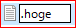
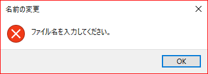
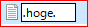
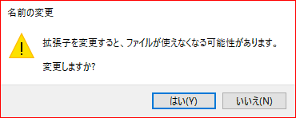
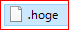

ファイル名の冒頭および語尾の両方にドットを付与！
.gitignoreとか.bashrcのように、何かの設定ファイルは冒頭に「.（ドット）」が付いて拡張子なしであるような名前だったりします。
ところが、Windowsのexplorer上でドット付のファイルを作成しようとしたらエラーになりました。
たとえば.hogeという名前のファイルを作成しようとします。

こんな名前のファイルを作成しようとすると・・・

エラー！
そういう場合は、下記のようにファイル名の冒頭および語尾の両方にドットを付与してやるとファイルを作成できます。
.hoge.
すると・・・

「はい」を押せばドット付ファイルのできあがりです。
